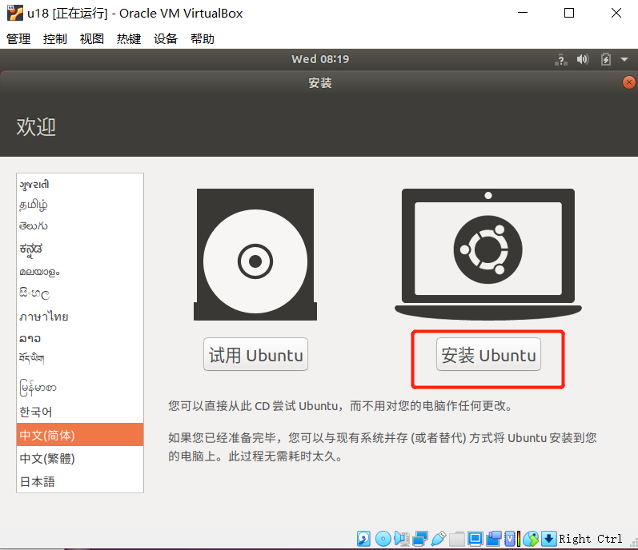
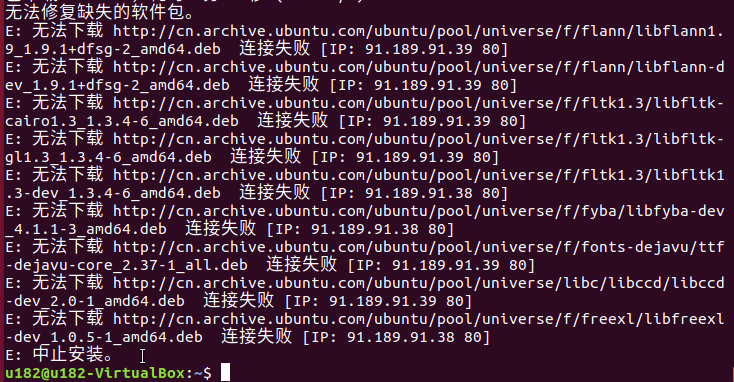
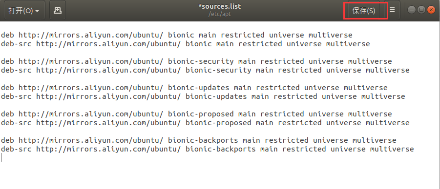
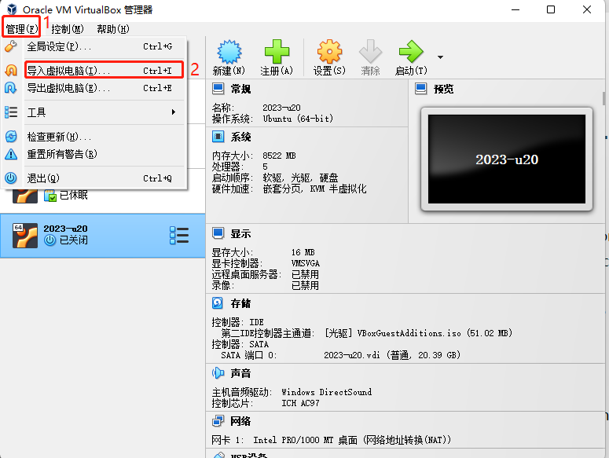
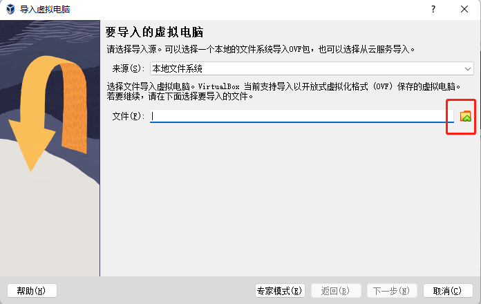
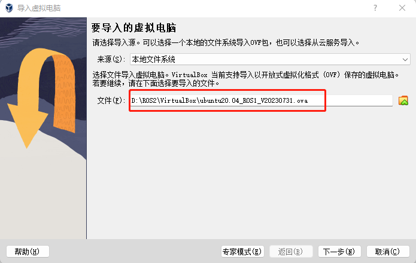

M5版本:
在Linux中安装不同版本的ubuntu系统
虚拟机安装
前往官方网站下载虚拟机Virtual Box 或者前往官方网站下载虚拟机 VM ware
VirtualBox 安装包：Windows hosts
VirtualBox 拓展包：VirtualBox 7.0.10 Oracle VM VirtualBox Extension Pack
当然，如果您已经拥有您的虚拟机，您可以跳过该步骤。
我们选择下载Virtual box，因为它是免费的。


新建虚拟机
创建虚拟机
在控制中选择新建
输入虚拟机名称和虚拟机存放的位置，选择虚拟机类型为Linux，选择ubuntu64位版本，进行下一步。

按照自己的需求配置内存大小，进行下一步。

选择现在创建虚拟硬盘，进行创建。

虚拟硬盘类型选择VDI类型，进行下一步。

分配虚拟硬盘大小，由于需要安装ubuntu系统，而且还会在该系统中进行操作，建议大小不要低于20G。

导入ubuntu系统
下载ubuntu系统。
请根据自己的需要选择ubuntu版本进行安装
注意： ROS2需要下载20.04版本。
三种版本的安装方法和过程都是相同的，这里以18.04版本作为例子进行安装

下载完成后有如图文件：

导入ubuntu到虚拟机中
在Virtual box中找到之前安装的虚拟机，进入设置，并在存储中给控制器分配光盘：


然后打开虚拟机进行ubuntu安装，并点击启动。
ubuntu安装
等待系统启动，进入欢迎界面，选中“中文（简体）”，并点击“安装 Ubuntu”按钮；

点击“继续”按钮；

选中“清除整个磁盘并安装 Ubuntu”选项，点击“现在安装”按钮；

在弹出的对话框中点击“继续”按钮；

设置地理位置，点击“继续”按钮；

设置用户名和密码，点击“继续”按钮；

进入系统安装界面，请耐心等待；

待安装完成，在弹出的对话框中，点击“现在重启”按钮，完成安装。

ROS 环境搭建
ROS 安装
基本的开发环境搭建需要安装机器人操作系统 ROS、MoveIt 以及 git 版本管理器，以下分别介绍其安装方法及流程。
myCobot 280-M5 和 myCobot 320-M5 的设备可参考以下介绍的安装方式及流程。myCobot 280-PI 和 myCobot 320-PI 的设备仅仅需要执行 mycobot_ros 安装包的安装。
版本选择
ROS 跟 ubuntu 有一一对应的关系，不同版本的 ubuntu 对应不同版本的 ROS，参考网站见下：http://wiki.ros.org/Distributions
- 这里给出对应Ubuntu支持的 ROS 版本:
- Ubuntu 16.04 / ROS Kinetic
- Ubuntu 18.04 / ROS Melodic
- Ubuntu 20.04 / ROS Noetic
请根据自己安装的Ubuntu版本进行对应ROS版本的安装
如果版本不同，下载将会失败.在这里我们选择的系统为 Ubuntu 18.04, 对应 ROS 版本为 ROS Melodic
NOTE: 目前我们不提供 windows 安装 ROS 的任何参考, 若有需要请参考 https://www.ros.org/install/
开始安装
添加源
Ubuntu 本身的软件源列表中没有 ROS 的软件源，所以需要先将 ROS 软件源配置到软件列表仓库中，才能下载 ROS 。打开一个控制台终端(快捷键Ctrl+Alt+T),输入如下指令：
- 官方源：
sudo sh -c 'echo "deb http://packages.ros.org/ros/ubuntu $(lsb_release -sc) main" > /etc/apt/sources.list.d/ros-latest.list'
- 若下载速度缓慢，推荐就近选择一个镜像源替换上面的命令。例如，Tsinghua University为：
sudo sh -c '. /etc/lsb-release && echo "deb http://mirrors.tuna.tsinghua.edu.cn/ros/ubuntu/ `lsb_release -cs` main" > /etc/apt/sources.list.d/ros-latest.list'
这里会要求输入用户密码，输入安装 Ubuntu 时设置的用户密码即可。
设置秘钥
配置公网秘钥,这一步是为了让系统确认我们的路径是安全的的，这样下载文件才没有问题，不然下载后会被立刻删掉：
sudo apt-key adv --keyserver 'hkp://keyserver.ubuntu.com:80' --recv-key C1CF6E31E6BADE8868B172B4F42ED6FBAB17C654
执行结果显示如下：

安装
在加入了新的软件源后，需要更新软件源列表，打开一个控制台终端(快捷键Ctrl+Alt+T),输入如下指令：
sudo apt-get update
执行安装 ROS，打开一个控制台终端(快捷键Ctrl+Alt+T),请按照自己的Ubuntu版本选择输入以下指令：
# Ubuntu 16.04
sudo apt install ros-kinetic-desktop-full
# Ubuntu 18.04
sudo apt install ros-melodic-desktop-full
# Ubuntu 20.04
sudo apt install ros-noetic-desktop-full
这里推荐安装完整的 ROS，防止库和依赖的缺失。
安装过程耗时比较长，需要耐心等待
- 若安装过程中，控制台终端出现如下错误信息，则需要更换/etc/apt/sources.list中的软件源列表。

- 打开一个控制台终端(快捷键Ctrl+Alt+T)，输入如下指令：
sudo gedit /etc/apt/sources.list
- 将sources.list中的官方软件源全部替换成下面的阿里云软件源：
Ubuntu 16.04版本：
deb http://mirrors.aliyun.com/ubuntu/ xenial main
deb-src http://mirrors.aliyun.com/ubuntu/ xenial main
deb http://mirrors.aliyun.com/ubuntu/ xenial-updates main
deb-src http://mirrors.aliyun.com/ubuntu/ xenial-updates main
deb http://mirrors.aliyun.com/ubuntu/ xenial universe
deb-src http://mirrors.aliyun.com/ubuntu/ xenial universe
deb http://mirrors.aliyun.com/ubuntu/ xenial-updates universe
deb-src http://mirrors.aliyun.com/ubuntu/ xenial-updates universe
deb http://mirrors.aliyun.com/ubuntu/ xenial-security main
deb-src http://mirrors.aliyun.com/ubuntu/ xenial-security main
deb http://mirrors.aliyun.com/ubuntu/ xenial-security universe
deb-src http://mirrors.aliyun.com/ubuntu/ xenial-security universe
Ubuntu 18.04版本：
deb http://mirrors.aliyun.com/ubuntu/ bionic main restricted universe multiverse
deb-src http://mirrors.aliyun.com/ubuntu/ bionic main restricted universe multiverse
deb http://mirrors.aliyun.com/ubuntu/ bionic-security main restricted universe multiverse
deb-src http://mirrors.aliyun.com/ubuntu/ bionic-security main restricted universe multiverse
deb http://mirrors.aliyun.com/ubuntu/ bionic-updates main restricted universe multiverse
deb-src http://mirrors.aliyun.com/ubuntu/ bionic-updates main restricted universe multiverse
deb http://mirrors.aliyun.com/ubuntu/ bionic-proposed main restricted universe multiverse
deb-src http://mirrors.aliyun.com/ubuntu/ bionic-proposed main restricted universe multiverse
deb http://mirrors.aliyun.com/ubuntu/ bionic-backports main restricted universe multiverse
deb-src http://mirrors.aliyun.com/ubuntu/ bionic-backports main restricted universe multiverse
Ubuntu 20.04版本：
deb http://mirrors.aliyun.com/ubuntu/ focal main restricted universe multiverse
deb-src http://mirrors.aliyun.com/ubuntu/ focal main restricted universe multiverse
deb http://mirrors.aliyun.com/ubuntu/ focal-security main restricted universe multiverse
deb-src http://mirrors.aliyun.com/ubuntu/ focal-security main restricted universe multiverse
deb http://mirrors.aliyun.com/ubuntu/ focal-updates main restricted universe multiverse
deb-src http://mirrors.aliyun.com/ubuntu/ focal-updates main restricted universe multiverse
deb http://mirrors.aliyun.com/ubuntu/ focal-proposed main restricted universe multiverse
deb-src http://mirrors.aliyun.com/ubuntu/ focal-proposed main restricted universe multiverse
deb http://mirrors.aliyun.com/ubuntu/ focal-backports main restricted universe multiverse
deb-src http://mirrors.aliyun.com/ubuntu/ focal-backports main restricted universe multiverse
- 配置完成后，sources.list文件内容如下所示，点击保存并退出。

- 更新软件源列表，在控制台终端输入:
sudo apt-get update
- 在控制台终端输入安装ROS的指令：
# Ubuntu 16.04
sudo apt install ros-kinetic-desktop-full
# Ubuntu 18.04
sudo apt install ros-melodic-desktop-full
# Ubuntu 20.04
sudo apt install ros-noetic-desktop-full
安装过程耗时比较长，需要耐心等待
配置 ROS 环境到系统
rosdep 让你能够轻松地安装被想要编译的源代码，或被某些 ROS 核心组件需要的系统依赖，在终端依次执行以下命令，打开一个控制台终端(快捷键Ctrl+Alt+T)。
如果您的系统没有安装rosdep,请使用命令sudo apt install python-rosdep进行安装。
如果您的安装的Ubuntu系统是20.04版本，请使用命令sudo apt install python3-rosdep进行安装，完成后执行rosdep初始化命令。

初始化 rosdep：
sudo rosdep init
若出现如下图所示的错误提示：

解决方法： 修改hosts文件，控制台终端输入下面的指令：
sudo gedit /etc/hosts
在文件内容末端，加入以下两个网址的IP地址实现访问：
199.232.28.133 raw.githubusercontent.com
151.101.228.133 raw.github.com
修改完成后，在控制台终端执行：
sudo rosdep init
rosdep update
初始化完成后，为了避免每次关掉终端窗口后都需要重新生效 ROS 功能路径，我们可以把路径配置到环境变量中，这样在每次打开新的终端时便可自动生效 ROS 功能路径 在终端依次执行以下命令，打开一个控制台终端(快捷键Ctrl+Alt+T)：
设置ros环境
Bash
执行以下命令：
# Ubuntu 16.04
# 将 ros 环境加入到当前控制台的环境变量
echo "source /opt/ros/kinetic/setup.bash" >> ~/.bashrc
# Ubuntu 18.04
echo "source /opt/ros/melodic/setup.bash" >> ~/.bashrc
# Ubuntu 20.04
echo "source /opt/ros/noetic/setup.bash" >> ~/.bashrc
source ~/.bashrc
安装 ROS 额外依赖项
在终端输入以下命令安装ROS额外依赖项，打开一个控制台终端(快捷键Ctrl+Alt+T)：
sudo apt-get install python-rosinstall python-rosinstall-generator python-wstool build-essential
如果你的Unbutu系统是20.04版本，请执行以下命令安装：
sudo apt install python3-rosdep python3-rosinstall python3-rosinstall-generator python3-wstool build-essential
# Ubuntu 16.04
sudo apt install ros-kinetic-joint-state-publisher-gui
# Ubuntu 18.04
sudo apt install ros-melodic-joint-state-publisher-gui
# Ubuntu 20.04
sudo apt install ros-noetic-joint-state-publisher-gui
验证安装
ROS 系统的启动需要一个 ROS Master，即节点管理器，我们可以在终端输入 roscore 指令来启动 ROS Master。
为了验证 ROS 是否安装成功，打开一个控制台终端(快捷键Ctrl+Alt+T)，在终端执行以下命令：
roscore
当显示如下界面，则表示 ROS 安装成功

roscore命令启动了一个节点管理器，其作用就是用于节点管理，在一个ros系统中，有且只有一个，它是ros节点运行的前提，所以在执行启动ros节点前，第一步都需要执行roscore。
更多更详细的安装指导，可以参考官方的安装指导，网址: http://wiki.ros.org/ROS/Installation
MoveIt 安装
MoveIt 是 ros 中一系列移动操作的功能包的组成，主要包含运动规划，碰撞检测，运动学，3D 感知，操作控制等功能。
更新软件源列表
打开一个控制台终端(快捷键Ctrl+Alt+T)，在终端窗口输入以下命令，以更新软件源列表：
sudo apt-get update
安装 MoveIt
打开一个控制台终端(快捷键Ctrl+Alt+T)，在终端窗口输入以下命令，执行 MoveIt 的安装：
# Ubuntu16.04
sudo apt-get install ros-kinetic-moveit
# Ubuntu 18.04
sudo apt-get install ros-melodic-moveit
# Ubuntu20.04
sudo apt-get install ros-noetic-moveit
git 安装
添加软件源
将 git 安装的软件源添加到 ubuntu 的软件源列表中，打开一个控制台终端(快捷键Ctrl+Alt+T)，在终端窗口输入以下命令：
sudo add-apt-repository ppa:git-core/ppa
更新软件源列表
打开一个控制台终端(快捷键Ctrl+Alt+T)，在终端窗口输入以下命令，以更新软件源列表：
sudo apt-get update
安装 git
打开一个控制台终端(快捷键Ctrl+Alt+T)，在终端窗口输入以下命令，执行 git 的安装：
sudo apt-get install git
验证安装
读取 git 版本，打开一个控制台终端(快捷键Ctrl+Alt+T)，在终端窗口输入以下命令：
git --version
在终端中可以显示 git 版本号，如下，即为安装成功

使用
在后续下载 ros 包需要用到git，git 的使用可以参考下面链接：
mycobot_ros 安装
mycobot_ros 是 ElephantRobotics 推出的，适配旗下桌面型六轴机械臂 mycobot系列 的ROS 包。
项目地址：http://github.com/elephantrobotics/mycobot_ros
前提
在安装包之前，请保证拥有 ros 工作空间。
这里我们给出创建工作空间的样例命令，默认为catkin_ws, 打开一个控制台终端(快捷键Ctrl+Alt+T)，在命令行输入以下命令：
mkdir -p ~/catkin_ws/src # 创建文件夹
cd ~/catkin_ws/src # 进入文件夹
catkin_init_workspace # 把当前目录初始化为一个ROS工作空间
cd .. # 返回上级目录
catkin_make # 构建工作区中的代码。
添加工作空间的环境
Bash
官方默认的 ROS1 工作区是 catkin_ws。
# Ubuntu 16.04
echo "source ~/catkin_ws/devel/setup.bash" >> ~/.bashrc
# Ubuntu 18.04
echo "source ~/catkin_ws/devel/setup.bash" >> ~/.bashrc
# Ubuntu 20.04
echo "source ~/catkin_ws/devel/setup.bash" >> ~/.bashrc
source ~/.bashrc
安装
NOTE：
- 本包依赖于ROS和MoveIT，使用前确保以成功安装ROS和MoveIT。
- 本包与真实机械臂的交互依赖于PythonApi -
pymycobot - Api项目地为：https://github.com/elephantrobotics/pymycobot
快速安装：
pip install pymycobot --upgrade执行pip install pymycobot --upgrade命令时，若出现如下图错误提示：

根据提示输入以下命令安装pip
sudo apt install python-pip如果你的Ubuntu系统是20.04版本，请执行命令
sudo apt install python3-pip安装pip pip安装完成后，终端再次执行pip install pymycobot --upgrade安装方式依赖于Git，请确保电脑中已安装Git。
官方默认的 ROS1 工作区是 catkin_ws。
cd ~/catkin_ws/src # 进入工作区的src文件夹中
git clone https://github.com/elephantrobotics/mycobot_ros.git # 克隆github上的代码
cd .. # 返回工作区
catkin_make # 构建工作区中的代码
cd ..
source devel/setup.bash # 添加环境变量
M5版本导入系统镜像/Pro600如何使用ros:
注意： 为了降低环境搭建难度，我们将给出 Linux系统镜像（Ubuntu 20.04）、Virtual Box安装包以及其扩展包。 接下来将教导大家如安装Virtual Box以及导入Linux系统镜像（默认密码为123）。 已内置环境： ROS1 + Moveit + Git + pymycobot + mycobot_ros
安装虚拟机
前往官方网站下载虚拟机Virtual Box 或者前往官方网站下载虚拟机 VM ware
VirtualBox 安装包：Windows hosts
VirtualBox 拓展包：VirtualBox 7.0.10 Oracle VM VirtualBox Extension Pack
当然，如果您已经拥有您的虚拟机，您可以跳过该步骤。
我们选择下载Virtual box，因为它是免费的。

下载Linux系统镜像
点击下载：Linux ubuntu20.04
导入Linux系统镜像
在Virtual Box界面中点击 管理 -> 导入虚拟电脑 -> 选择虚拟镜像 -> 选择安装路径并进行导入，如下安装即可。




等待镜像导入即可，如下图即为安装成功。

然后启动系统即可，默认密码为 123
树莓派版本:
树莓派版本自带Ubuntu（V-20.04）系统，内置开发环境，无需搭建和管理，更新mycobot_ros包即可。
mycobot_ros是大象机器人推出的适用于其mycobot系列桌面六轴机械臂的ROS1包。
ROS1项目地址: http://github.com/elephantrobotics/mycobot_ros
机械臂API驱动库地址: https://github.com/elephantrobotics/pymycobot
更新 mycobot_ros 包
为了保证用户能及时使用最新的官方包，可以通过文件管理器进入/home/er/catkin_ws/src文件夹，打开控制台终端（ 快捷键 Ctrl+Alt+T ) ，输入以下命令进行更新：
# 克隆github上的代码
cd ~/catkin_ws/src
git clone https://github.com/elephantrobotics/mycobot_ros.git # 在决定是否执行此命令之前，请查看下面的注意部分
cd .. # 回到工作区
catkin_make # 在工作区中构建代码
source devel/setup.bash # 添加环境变量
注意: 如果在/home/er/catkin_ws/src（相当于~/catkin_ws/src）目录下已经存在mycobot_ros文件夹，则需要先删除原来的mycobot_ros，然后再执行上述命令。 其中，目录路径中的er为系统的用户名。 如有不一致，请修改。
至此ROS1环境搭建完成，ROS1的使用请参考13.1.3 Rviz介绍及使用。